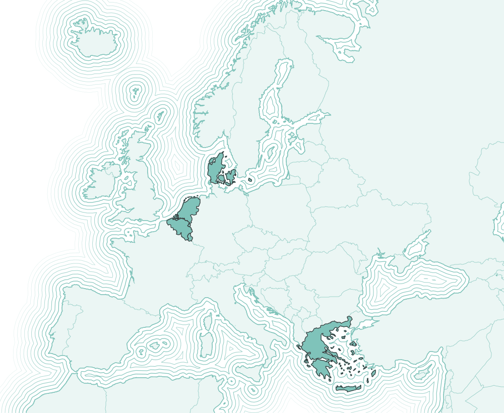

Our team
Η ομάδα μας
The people behind RestartGen
Οι άνθρωποι πίσω από το RestartGen
We’re young Greek scientists and professionals abroad, working as volunteers alongside people who live in Greece.
Είμαστε νέοι Έλληνες επιστήμονες και επαγγελματίες του εξωτερικού που εργαζόμαστε εθελοντικά, μαζί με ανθρώπους που ζουν στην Ελλάδα.
Where we are
Πού βρισκόμαστε
Our members live in five European countries, and all of us have roots in Greece.
Τα μέλη μας ζουν σε πέντε ευρωπαϊκές χώρες και όλοι έχουμε ρίζες στην Ελλάδα.

Swipe the map to see all countries.
Σύρετε τον χάρτη για να δείτε όλες τις χώρες.
Our members
Τα μέλη μας
Laura Bakola
Λώρα Μπακόλα
Co-founder, Netherlands
Συνιδρύτρια, Ολλανδία
Vasiliki Bili
Βασιλική Μπίλη
Member, Denmark
Μέλος, Δανία
Spyros Kroussas
Σπύρος Κρούσσας
Member, Luxembourg
Μέλος, Λουξεμβούργο
Elena Lianidou
Έλενα Λιανίδου
Member, Netherlands
Μέλος, Ολλανδία
Argyro Myzithra
Αργυρώ Μυζήθρα
Member, Greece
Μέλος, Ελλάδα
Maria Slamari
Μαρία Σλαμάρη
Member, Belgium
Μέλος, Βέλγιο
With thanks
Ευχαριστίες
Thanos Chatziioannou and Nikos Garoutsos, for their contribution to the project. Brand identity by Theresa Tsakona.
Στον Θάνο Χατζηιωάννου και τον Νίκο Γκαρούτσο για τη συμβολή τους. Εικαστική ταυτότητα: Θερέζα Τσακώνα.